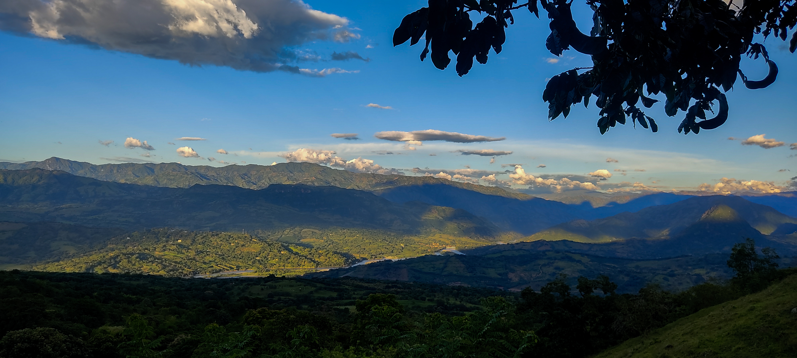
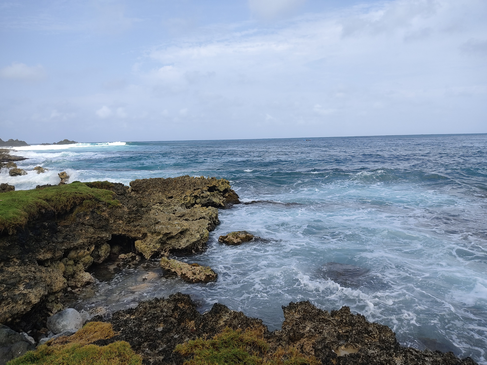
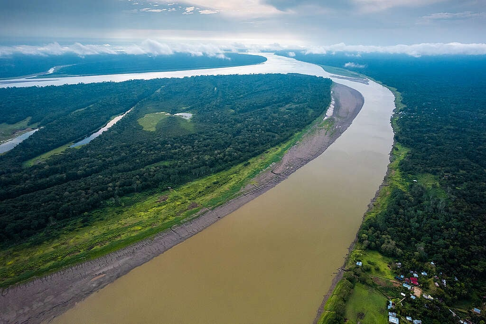
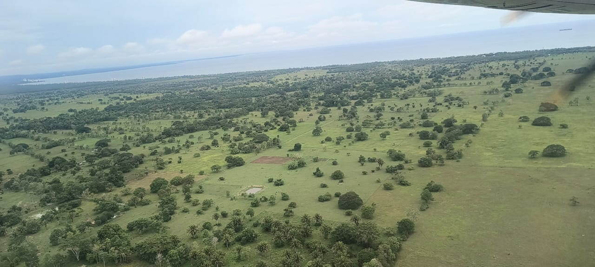

Nuestros Destinos Principales
Departamento de Antioquia
➔

- Biodiversidad Andina
- Tradición y memoria local
- Caminos de herradura
- Conservación de cuencas
- Experiencias comunitarias
- Cerros tutelares
Departamento del Chocó
➔

- Avistamiento de ballenas
- Selva húmeda tropical
- Playas vírgenes del Pacífico
- Cultura afrocolombiana
- Ecoturismo comunitario
- Ríos y cascadas naturales
Departamento del Amazonas
➔

- Pulmón verde del mundo
- Navegación por el río Amazonas
- Sabiduría ancestral indígena
- Avistamiento de delfines rosados
- Senderismo en selva virgen
- Gastronomía amazónica
Departamento de Sucre
➔

- Playas cristalinas del Caribe
- Golfo de Morrosquillo
- Manglares y reservas naturales
- Cultura sabanera
- Artesanías en caña flecha
- Descanso y gastronomía costeña